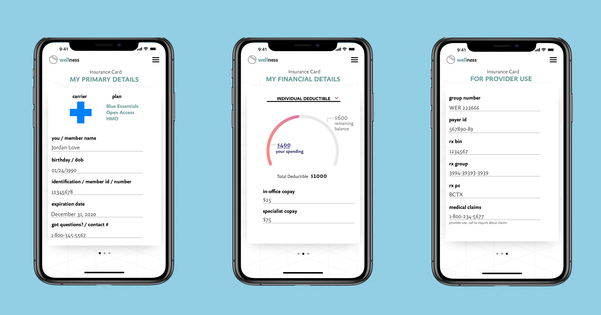
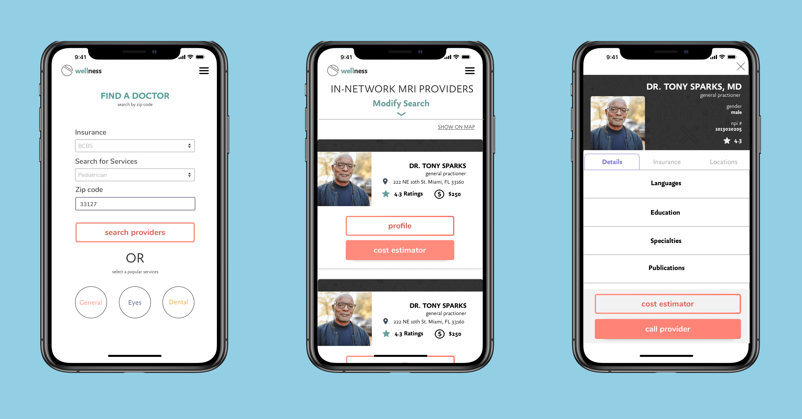
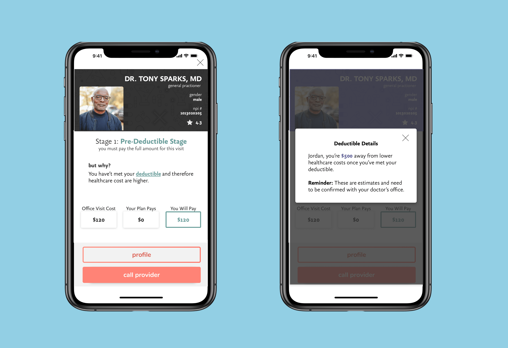

We Have a Problem
Maintaining health when healthcare and insurance remain
confusing.
Addressing the tangled web of our U.S. healthcare system is
essential for holistic wellness. If you or someone you know
has anything less than “amazing” health insurance then you
know healthcare is a tough topic.
- Confusing to navigate
- Expensive monthly premiums
- Unclear cost to benefit ratio

Introduction
Your average American adult over 25 years old will mention at
least one of the complaints listed above. If your company
provides health insurance then you may not notice the expense,
but you may experience feeling confused on which doctors are
in-network or how much you can expect to pay after your
appointment. We have all heard the news lately about large
bills arriving post-procedure (aka “Surprise Bills”) of
hundreds to thousands of dollars. I think we can all agree
that healthcare should not agitate more health problems.

The issues mentioned above are attributed to political and
social policies which oftentimes moves slower than technology.
In the meantime, what to do about the tangled web that not
only confuses you and me, but also stumps doctors and other
medical staff? MediXall (referred to as
the company from here on) originally hired
me for a separate more tame project. Eventually the company
pivoted its focus and this project landed in my lap.
Team & Role
The company was a small startup of less than 10 people at the time. Three of those team members were developers and their sole designer (moi!) made up the dev and design team. As lead product designer, I was responsible for turning business needs and consumer pain points into solutions, wireframes, and a prototype.
Target Audience
The business defined our audience as “everyone” because their
vision is to solve healthcare for every need and demographic.
Short of ambitious this was a lot to consider as their
designer. Therefore, I strategized and thought logically about
our most likely consumer.
Considering our product is digital, it relies on knowledge of
using a smartphone, requires trust in technology, and would
provide value for people with insurance then I anticipated our
potential audience would be the following:
- Ages: 26 - 45
- Technologically inclined
- Low to Mid Income
- Frequent healthcare consumers
These types of users are more likely to consider breaking the paradigm of booking and completing healthcare services. We know from our surveys that people often discover new doctors through referrals from family, friends, and current medical professionals. Contrary to that trend, Zocdoc’s search platform has contributed to breaking that paradigm paving the way for future companies that rely on online searches and reviews.
Business Needs
- Educate consumers on their insurance and how to navigate health services
- Visibly display financial information such as plan deductibles
- Repeat engagement from authorized users
- Ability to search for providers across the U.S.
Research
I set out to understand the issues more thoroughly with limited resources (startup life!) My strategies included:
- Reading about healthcare, health insurance, and finding competitors
- Studying health insurance plans
- Observing comments from people online about their experiences
- Using Hotjar to push survey questions and validate what I’ve learned
- Analyzing my research and coming up with theories
My research was motivated by my own confusion, fear, and lack of confidence at the time. I was operating as a designer-of-1 on a dev team that was relying on me to produce and a business that had needs and expectations.
Design Process
The company requested an early prototype that could educate our consumer and in return I strongly requested that I have time in the deadline to test this prototype thoroughly. I took all of the resources from my research, narrowed down some hypothetical pain points, and put on my "magic" cap. This led to the first iteration which to no surprise had a design overhaul in later stages of the process.
When the opportunity presents itself, I intentionally design for people with attention challenges. Therefore, I utilized card design so that bits of information could be well grouped, easy to read with primary focus on each scroll. I also designed mobile-first and stood my ground on this decision as an industry standard. The objective of this first iteration was to assess the value of educating consumers. Within that objective, I wished to explore pain points of real people in real time and collect my own data on features that consumers want in healthcare products.
Primary Themes
- Fear of the unknown and a history of unfavorable experiences meant avoiding health and wellness. As you can imagine this is not a secure or healthy way to live your life.
- Early and accurate cost estimate so consumers could likely avoid surprise bills and plan ahead for the cost just as they would plan for a vacation or other big expenses.
- Confident consumers want to shop around with the same confidence they have in other markets like groceries, clothing, and tech devices. Healthcare being a web of deadends and blindspots makes amateur research frustrating. However, we are asked to book and attend appointments simply on faith.
My test users expressed satisfaction with the concept of the product. They liked the efforts made to help them understand where they stood financially in their insurance plan like their deductible and previous appointments and spending. On the downside my cards, tone of copy, and onboarding approach did not translate. Again, I was not surprised by this and happily invited the opportunity to try again with new knowledge.
Features
In the second iteration, I focused on simplicity and
integration of functionality. What this meant was trimming the
fat of the onboarding cards, making each screen dynamic and
relevant to that particular user, and streamlining user
interactions from sign-in straight to the product value.
Key new features below:
Deductible Graph

Right away the user can see how much they have spent towards their deductible and an explanation of what that means.
Digital Insurance Card
Everytime you schedule appointments with health care providers, they ask about insurance details. If you’re enrolled in a plan they send a card that isn’t always on your person. We solved that issue by creating a digital card. I purposely divided the card up into relative sections to reduce confusion. The first view displays the most vital details required by the card holder for making appointments, followed by financials, and ending with data required by healthcare professionals for ordering prescriptions and filing claims. Micro-copy and titles are utilized to specify this relevance and provide some clarity.
Search Functionality
Users are encouraged to start searching for providers in their area. We designed the search to be quick by adding a drop down and search bar for quick scanning. There’s an additional option to search using “hot buttons” so with one click they can search for a speciality that pulls their location and returns results closest to the user.
Cost Estimator/ State of Insurance
Analysis of user tests data made clear the strong value of integrating a cost estimator that would address pain points of real people. Therefore, the key feature I focused on to set the product apart was to give users fee information prior to their visit with the doctor. Imagine knowing ahead of time that the office fee and copay add up to $X.XX and your insurance company will cover the rest. Users would obtain financial details without a phone call to the provider or awkward silences as they fubmle through instuance card details. Instead, users enter their insurance details on the website, search for a preferred provider, and get feedback that they can compare and scan at their leisure.
What I learned from doing research is that most insurance plans have at least three different states:
- Pre-deductible
- Post-deductible/Pre-Out-of-pocket-max(OOP)
- Post-Out-of-pocket-max(OOP)
Each state represents a scenario with more or less limitations
and financial burden. The most financial weight on the user is
the first state and the least burden is in the last state where
the insurance company covers all medical costs except for the
monthly premium.
No doubt this is all valuable information for all parties
involved, but as I dug deeper I noticed something very
disturbing. In order for our users to maximize shared costs and
support from their insurance company they would have to be
incredibly unwell. Individuals who have maxed out a high OOP
(e.g. $10,000) must have received a lot of medical services like
surgery, long-term treatments, or some other serious condition.
Let’s not forget we are talking about people’s real lives and
their well being. Reaching each of these insurance states may
not equate to “winning” like in other markets.
Summary
The product reached the stage of development. It’s built with vue.js on the frontend and php on the backend. Multiple APIs were required to create the functionality of the design. Currently, there are some roadblocks.
- There are so many types of insurance plans and as a result several unknown edge cases
- Accurate cost estimates requires cost insight from the provider
- Booking functionality also requires provider participation
Next steps
A lot of testing and feedback is required at this point in product development. Ideally, we would have tested on a weekly basis. Particular areas for testing include:
- Hot buttons: users may feel confused by two search options in one view
- User flow: intuitive and customizable UI for each user experience and state
- IA: validate the menu items and organize the site
- Provider profiles: improve the layout with most vital information
Personal Roadblock
As an empath, healer, and designer of solutions I am simply not satisfied with the current iteration of the product. I’m glad we could add features that assist people in their time of need and in some cases most vulnerable moments. However, there is more to be achieved here. Displaying visual graphs of a user’s health expenditures is not the same as Credit Karma showing increased credit scores or gaining membership points for free collectibles at your favorite department store. An increase in health spending often correlates with an increase in health challenges. Where is the validation and delightfulness in that?